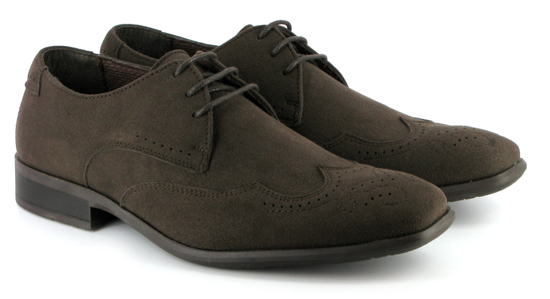
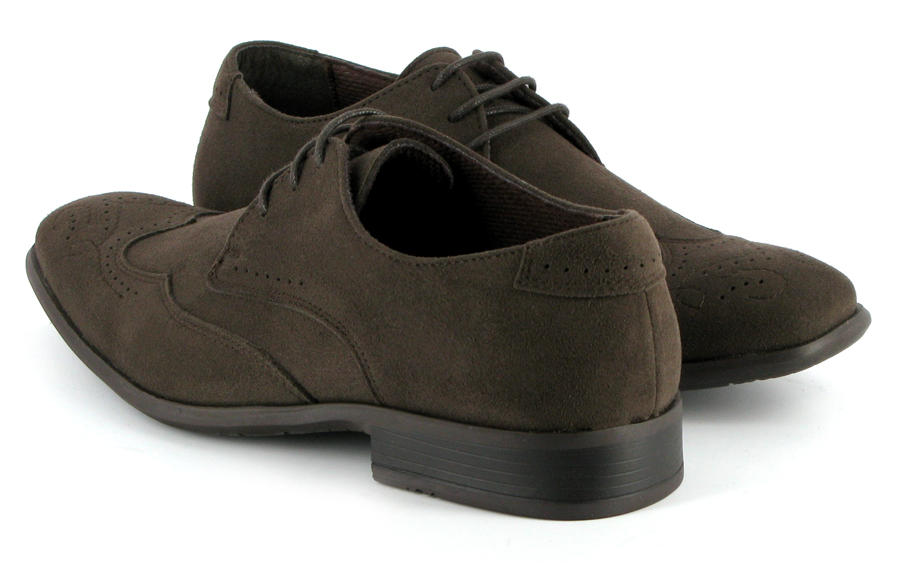
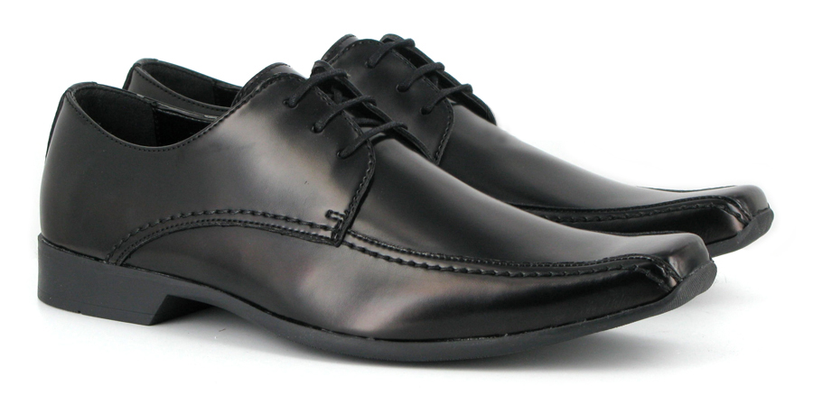
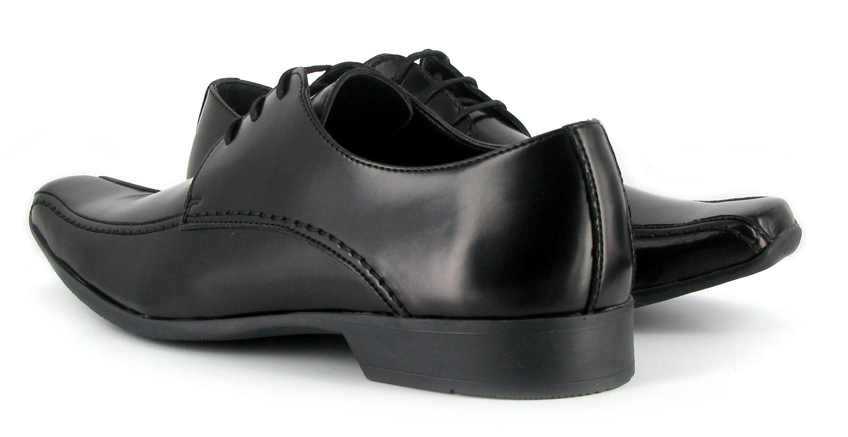
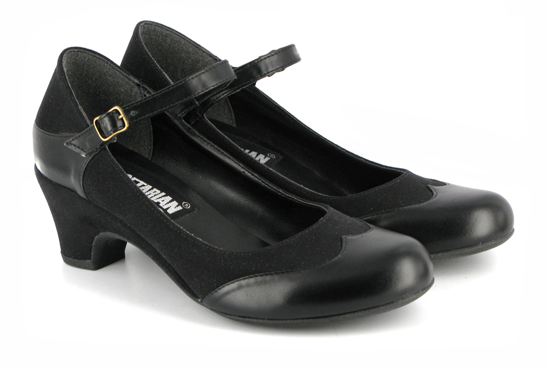
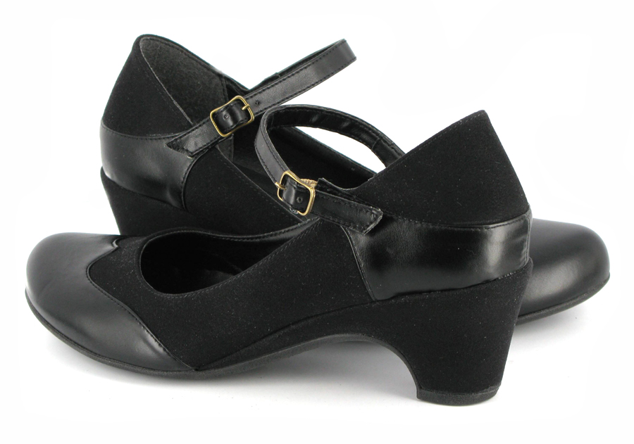
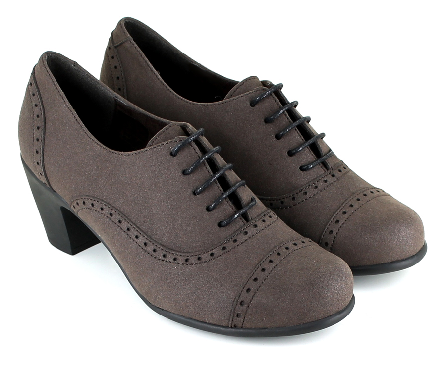
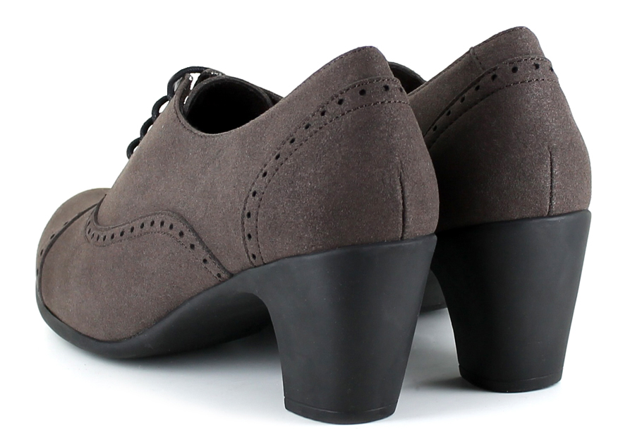

Product Code : 241000
Product Name : Liam Shoe (Brown)
Really nicely fitting mens lace-up-shoe.
Classic brogue detailing with a modern twist.
Soft to touch Vegetan Fake-suede takes little or no breaking-in.
Moisture absorbing insole and lining.
Slightly asymmetric sole profile with bevelled edge.
Grippy low profile sole design, moulded in thermoplastic rubber.
Made in Portugal.
Price : £69.95


Product Code : 154000
Product Name : Victor Shoe (Black)
Mens smart lace-up shoes. Simple and stylish, with thick /thin stitching detailing. Made from our smooth-grain microfibre material. This can be polished to a shine and creases beautifully and ages just like leather footwear. With grippy rubber sole unit. Made in the European Community.
Made in Portugal.
Price : £59.95


Product Code : 406000
Product Name : Babette Shoe (Black)
Womens strap shoe. Black fake suede and shiny faux leather mix. Neat toe shape and covered heel detail and flexible rubber soles. Heel height approx: 6cm.
Made in Spain.
Price : £69.95


Product Code : 761000
Product Name : Everley Shoe (Brown)
Women’s Lace-up brogue shoe made in soft brown Fake suede microfiber.
Heel approx. 6.5 cm /2.5 inches.
Made in Spain.
Price : £64.95